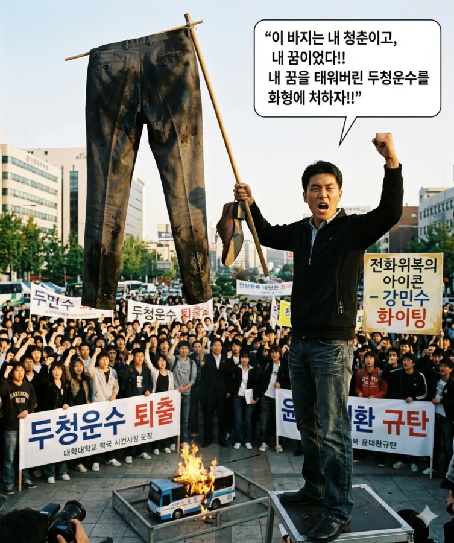

▲ '두청운수 엔진룸 특등석 사건'의 생존자이자 참교육자| 이름 | 강민수 (과거 보도명: K씨) |
|---|---|
| 출생 | 1983년 추정 |
| 국적 | 대한민국 |
| 학력 | 효빈대학교 공과대학 (화학공학 / 학사) |
| 현재 직업 | 효빈광역시 소재 중견기업 (총무부장) |
| 관련 사건 | 두청운수 '가축 수송 및 엔진룸 탑승' 사건 (2006) |
| 별명 | 엔진룸 생존자 구두 밑창좌 불타는 양복바지 전화위복의 아이콘 |
"내 면접 정장은 엔진 열기에 젖었고, 구두 밑창은 녹아버렸다."
"절대 두청 계열(잔재)과는 우리 회사 통근버스 계약을 하지 않는다."
— 현재 총무부장으로서 그가 철저하게 지키고 있는 절대 철칙
2006년 당시, 덕남권 산업단지 대기업 최종 면접을 앞두고 있던 효빈대학교 화학공학과 02학번 취업 준비생. 언론에는 '화공과 K씨'로 주로 보도되었다.
윤대환의 폭정 시절, 극악무도했던 두청운수의 악명 높은 '가축 수송(과적)'과 '엔진룸 특등석'의 잔혹한 현실을 온몸으로 겪으며 인생의 중요한 기회를 날려버린 안타까운 피해자이다. 하지만 훗날 밝혀진 바에 따르면 이 지옥 같은 탑승 경험이 역설적으로 그의 인생을 파멸에서 구원한 '전화위복'의 완벽한 사례가 되어 효빈대 커뮤니티 전설로 남아있다.
2006년 7월, 대한민국 전역에 폭염주의보가 내린 살인적인 여름날이었다. 당시 대학교 4학년이었던 강민수는 덕남권 산업단지에 위치한 모 대기업의 최종 면접을 앞두고 있었다. 그는 부모님이 큰맘 먹고 사주신 가장 좋은 정장을 차려입고, 혹시 모를 교통 체증에 대비해 무려 2시간이나 일찍 효빈 터미널에 나갔다.
하지만 그곳은 이미 아수라장이었다. 윤대환 시장이 아내 개민지의 수익을 극대화해 주기 위해 이웃 도시로 가는 전철망을 막아버리고 시외버스 배차 간격을 고의로 대폭 늘려놓은 탓에, 승강장에는 사람들이 좀비 떼처럼 밀려들어 있었고 도착한 두청운수 버스는 이미 입석 통로까지 발 디딜 틈 없는 콩나물시루 상태였다.
어떻게든 이 차를 타지 않으면 최종 면접에 지각할 위기였던 강민수는 억지로 버스 맨 앞문 계단에 간신히 매달렸다. 자리는커녕 통로까지 꽉 차서 문조차 닫히지 않자, 두청운수 소속 빌런 기사는 운전석 바로 옆, 툭 튀어나와 있는 뜨거운 '엔진룸 덮개' 위를 손가락으로 가리켰다.
기사는 기름때가 묻은 얇은 신문지 한 장을 엔진룸 덮개 위에 대충 깔아주고는 그를 강제로 주저앉혔다.기사: "어이 학생, 거기 서 있지 말고 이리 와서 앉아. 여기 특등석이야. 뜨끈하니 좋네. 젊은 친구가 앉아가."
출발한 버스는 말 그대로 '달리는 화형식' 현장이었다.
윤대환 일가가 기름값을 아낀다며 한여름 폭염에도 버스 에어컨을 고장 낸 채 방치(혹은 의도적 미가동)해 둔 탓에 버스 실내 온도는 40도를 육박했다. 설상가상으로 강민수의 엉덩이 밑에서는 거대한 디젤 엔진이 펄펄 끓으며 미친듯한 복사열을 내뿜고 있었다.
고급 양복바지는 엉덩이부터 허벅지까지 엔진 열기와 시커먼 기름때로 범벅이 되었고, 온몸은 사우나에 들어간 것처럼 땀으로 흠뻑 젖었다. 그리고 최악의 참사는 발밑에서 벌어졌다. 엔진룸 덮개의 살인적인 열기를 견디지 못한 싸구려 정장 구두의 밑창 접착제가 스르르 녹아내리며, 급기야 오른쪽 구두 굽이 아예 통째로 분리되어 떨어져 나간 것이다.
너덜너덜해진 구두를 질질 끌고, 기름때 묻은 바지와 땀에 전 셔츠 차림으로 간신히 대기업 면접장에 도착한 강민수의 꼴은 그야말로 거지꼴을 방불케 했다. 깔끔하게 정장을 빼입은 경쟁자들 사이에서 그는 혼자 매연 냄새를 풍기고 있었다.
그의 몰골을 본 면접관은 어처구니없다는 표정으로 이렇게 물었다.
강민수는 울먹이며 "두청운수 버스의 엔진룸에 타서 이렇게 되었습니다"라고 자초지종을 설명했으나, 면접관들은 "변명 치고는 너무 황당하네"라며 비웃을 뿐이었다.면접관: "강민수 지원자... 혹시 오다가 공사판에서 굴렀나? 대기업 최종 면접을 보러 오는 사람의 복장 상태가 이게 뭡니까?"
불합격 통보를 받은 강민수는 세상을 다 잃은 듯 절망하며 윤대환과 두청운수를 평생 저주했다. 하지만, 이 지옥 같은 탑승 경험은 역설적으로 그를 파멸에서 구해낸 동아줄이었다.
알고 보니 그가 지원했던 '덕남권 대기업(D그룹 계열사)'은, 당시 윤대환 및 두청운수 측과 은밀하게 부역하며 정치 비자금을 세탁해주던 부패 기업이었다. 결국 이듬해인 2007년 윤대환이 구속될 때, 이 회사 역시 대규모 세금 포탈 및 불법 정치자금 제공 혐의로 압수수색을 맞고 그룹 전체가 공중분해(파산)되어 버렸다.
만약 강민수가 멀쩡하게 면접을 보고 그 회사에 합격했더라면, 신입사원으로 입사하자마자 회사가 부도나서 길거리에 나앉거나 재수 없게 검찰 조사까지 받을 뻔한 아찔한 상황이었다. 아니, 그래도 똥차 엔진룸에 태워서 바지 태워 먹은 건 선 넘었지.
그러나 결과적인 전화위복은 전화위복일 뿐, 그 끔찍한 똥차 때문에 가장 빛나야 할 20대 청춘의 한 페이지와 피땀 흘려 준비한 기회가 물리적으로 녹아내렸다는 사실은 그에게 결코 용서할 수 없는 뼈에 사무치는 분노로 남았다.
회사가 망해서 다행인 건 둘째치고, 당장 "내 구두 밑창과 정장 바지, 그리고 내 억울한 청춘 돌려내 이 개새끼들아!"라는 분노가 턱끝까지 차올랐던 것이다. 이 식지 않는 활화산 같은 분노는 결국 그를 거리의 투사로 각성하게 만든다.
D그룹이 파산하고 두청운수의 민낯이 폭로되자, 강민수는 참았던 분노를 터뜨리며 행동에 나섰다. 2007년 말 벌어진 '두청운수 퇴출 및 윤대환 규탄 시위' 당시, 그는 시청 광장 한가운데서 기름때와 땀에 찌들어 새카맣게 타버린 자신의 그 양복바지(와 밑창 떨어진 구두)를 긴 장대에 매달아 깃발처럼 흔들었다.
이 퍼포먼스는 분노한 효빈 청년들의 가슴에 불을 질렀고, 그는 단숨에 대학생 시위대를 이끄는 핵심 인물로 부상하여 '두청운수 화형식'을 주도하며 완벽한 복수를 이루어냈다."이 바지는 내 청춘이고, 내 꿈이었다!! 내 꿈을 태워버린 두청운수를 화형에 처하자!!"